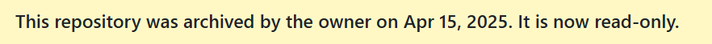

DCIC2025作品赛游记
数字中国2025也算告一段落了
感谢师兄们的无私帮助和师弟的不懈打杂（bushi），最终获取优胜奖（翻译：参与奖）
比赛最一开始，导师问我要不要打这个比赛，用可修订区块链；我一听，诶又有师兄带飞了？那包要打的哇，然后答应了下来
后来线下讨论，才发现师兄们太忙了，这个次是我带队（哭哭
后来意识到，感觉我这队好像是来凑数的~ 毕竟是自己学校承办的比赛，所以参赛人数还是不能少的。不过毕竟是自己导师交给自己的任务，还是得好好干
好在老师给我找了个大一的学弟，帮我分担了些文档工作——写得还很不错
不过我头一次做PPT，做的一坨，狠狠改了一个星期，终于有点模样了~
给老师看了一下，老师没说什么——那就是可以（嘻嘻），提交~
然后把github仓库改成了只读
等出成绩那天，莫名其妙入围了。我头顶一个大大的问号~
把喜报告诉了队友，取消仓库的只读状态，然后继续狂肝吧~
师兄指导了一下，又改了好久的PPT，然后交给老师，老师还给指导了很多（老师：你是怎么入围的。我：我也不知道哇（哭）），最后尽管差强人意，不过也差不太多了
最终展示的时候，PPT大致中规中矩的样子，答辩问了一些问题确实难住我了
- 基于可修订区块链的网络和传统数据库有什么差异？我当时答的好像是分布式，Web3.0下的，感觉问题不大
- 有没有什么专利？我想了半天回答确实没有。后来师兄告诉我那个专家是企业的，论文比专利难，专利是横向，论文是纵向，学到了~
- 和传统区块链实现上有什么不同？我还没学区块链网络的体系结构呢~然后回答的是变色龙哈希的构造（嘻嘻那篇论文我还是看过的），这个勉强算是答上来了
- 区块链的优势在于不可修改，但是可修订区块链没有这一优势了岂不是。我当时确实没想好怎么回答，然后就和稀泥~说优势在于监管和隐私平衡。当天晚上老师说这个问题可以用19年一篇S&P（基于投票的变色龙哈希）回答，也没有中心机构，我恍然大明白。后续读论文，又遇到了许可链的应用和其他可修订区块链的可行实现优势，感觉那时候确实阅历太狭隘了
无论如何比赛结束了，还是混到了个奖~
下次好好多读论文，再也不做PPT了（哭哭），做PPT好累~
唉唉该做还是要做的，只不过中心放在科研上了该，那两个星期光肝PPT了，别的啥也没做
还有就是确实收获到很多师兄和老师给的指导，记下来了，以后没准还能用到
现在这个仓库正式改为已读了

下次比赛再见~
本博客所有文章除特别声明外，均采用 CC BY-NC-SA 4.0 许可协议。转载请注明来源 coperlm's Blog！
相关推荐
.gif)
2025-05-17
CS2025参会游记
...
.gif)
2024-08-13
厦大一日游（机器人大赛）
原文链接 原文发表日期...
.gif)
2025-10-26
密码技术竞赛2025作品赛游记
今年又报名了密码技术竞赛，不出意外应该是我本科期间的最后一场比赛了 我个人而言主要是motivation还是因为去年没晋级，今年弥补一下去年的遗憾 一开始有多个选题，感觉都不是很好做，最后选的是用师兄最近正在搞的TEE 然后商讨了一下，原班人马报名今年密码技术竞赛 然后队名直接是从XXX2队改为了XXX3队，报名的时候发现我们学校就我们一支队伍打这个比赛了 经过前段时间马老师帮我改论文学到的东东，现在开始逐渐会写文档了，然后写啊写，润色啊润色，改了好几版 最后给老师看了看，除了少量typo上的问题，老师说一些表达和材料支撑不太行，并说可以去参考一下他的面上 还好没有像之前一样狠狠批改（泪目，说明我的文档撰写能力有所提升~ 然后麻烦师兄发给我了老师的面上，狠狠学习了一下 然后材料不太行，这个没办法了，于是乎就交上了；但是说实话这个比去年那个强了好几倍哇，感觉除了不太新颖，应该晋级问题不大~ 先把仓库封存了，希望可以晋级~ 希望这一部分还可以更新；如果没有更新，说明没有晋级（哭
.gif)
2024-10-31
机器人联盟赛/对抗赛游记回忆记录
...
.gif)
2025-11-09
海丝论坛-会议记录
第一场属性基加密去中心化，因为如果msk生成者是恶意的，则系统不再安全；23年由用户生成（但是需要安全的Setup），不再有中心（基于注册），公私钥对和函数绑定；这一篇基于lattice，属于ZZCGQ25；做的是代数构造，最好的构造是WW25和ARM25（因为假设比较好）；对公私钥对（vector）进行承诺，可以用传统哈希构造默克尔树，RBE[DKL+23]用的是代数哈希来组成的代数结构，方便进行承诺，用带结构的矩阵进行转化，又转化成了经典PKE的结构（这里面没有策略，只是检查在不在里面）；汇报人的工作把策略嵌入进去：多加了一层哈希，把函数和input嵌入进去。现在是给每个人构造一个密文，因为绑定了index，故而使用随机的index，用GGH Encoding（混淆里面经典算法）；LWE用的是Evasive...
.gif)
2024-11-12
第九届全国密码技术竞赛参赛游记
...
评论
WalineDisqus
.gif)
.gif)
.gif)
.gif)
.gif)